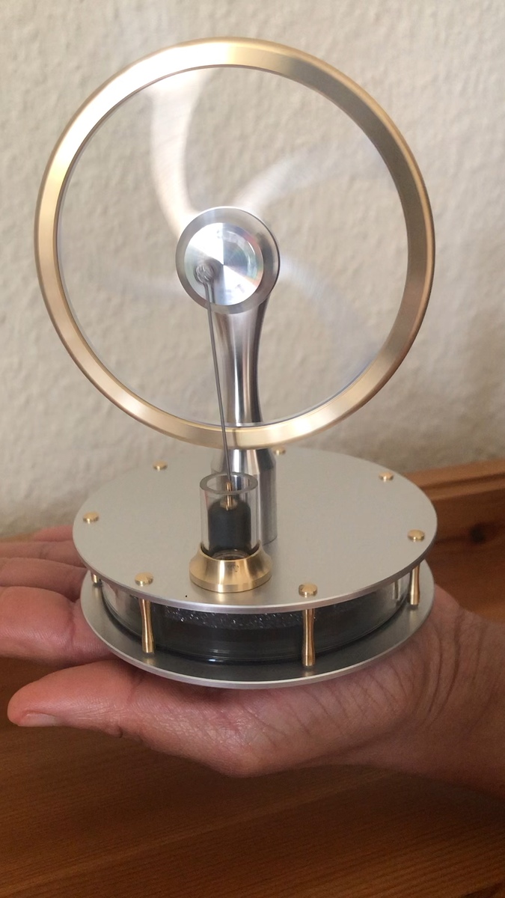
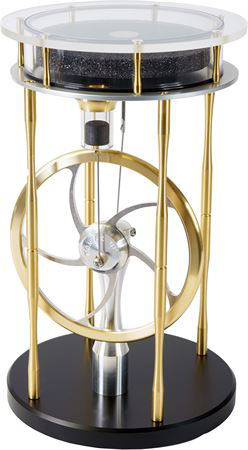
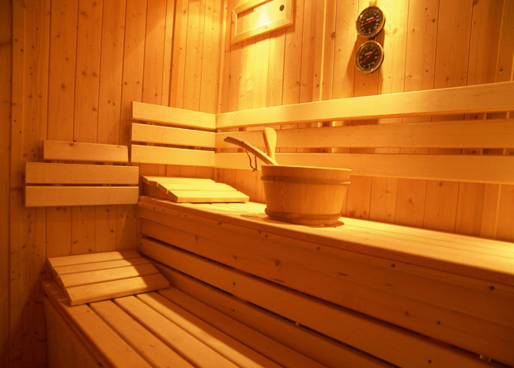
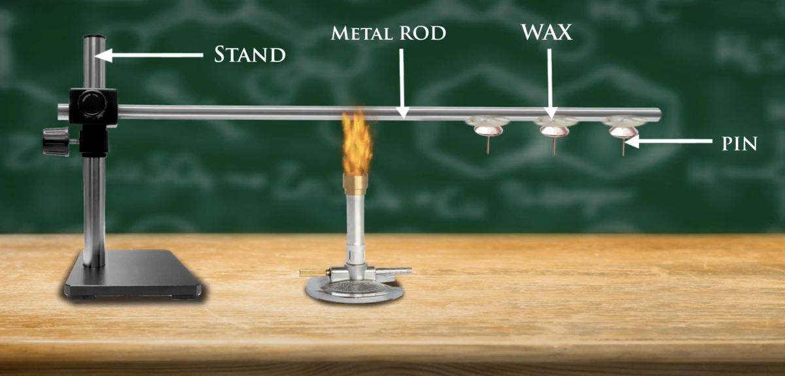
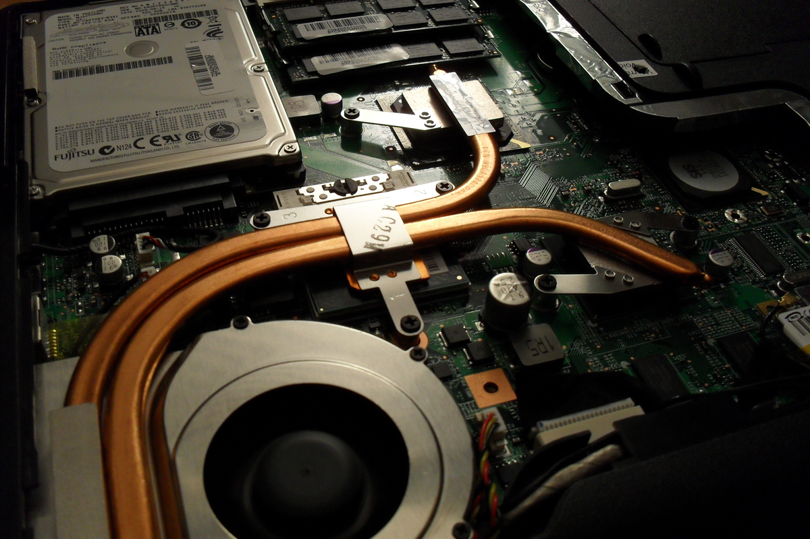

2 What is Heat Transfer?
After this chapter, you will be able to:
- Explain the difference between heat transfer and thermodynamics
- Distinguish between the three modes of heat transfer
- Identify which mode dominates in different situations
- Recognise heat transfer in everyday phenomena
2.1 Thermodynamics vs Heat Transfer
I have a Stirling engine on my desk. It runs on any temperature difference. I can power it by placing it on my palm, setting it on a thermos of hot coffee with the lid removed, or positioning it under a desk lamp so the light heats the dark absorber plate.


Heat goes in, the flywheel spins, work comes out.
From a thermodynamics perspective, these scenarios are identical. Energy input, work output. But thermodynamics has nothing to say about how the heat actually gets into the engine.
In thermodynamics, you worked with heat transfer rate, denoted \(\dot{Q}\) and measured in watts (W), or equivalently joules per second (J/s). You calculated \(\dot{Q}\) for many problems, but you were always interested in:
- Equilibrium states: the initial and final conditions of a system
- Energy accounting: how much \(\dot{Q}\) was required to move from state 1 to state 2
Two things you were not interested in:
- Rate: How quickly did that transfer occur?
- Mechanism: By what physical process did energy enter the system?
Heat transfer focuses precisely on these two questions. We want to know not just how much energy moves, but how fast and by what means.
This distinction has real engineering consequences. Knowing that a CPU generates 100 W tells you nothing about whether it will overheat. You need to know how fast you can move that heat away, and that requires understanding heat transfer mechanisms.
2.2 Temperature: Perception vs Reality
If you pull a dish from the oven and it feels hot, you assume it has a high temperature. Usually correct. But perception can be deceptive.
Consider a sauna. There’s a bucket of water and hot rocks in the corner. You throw water on the rocks. It evaporates instantly, filling the room with steam.

Does the room become hotter or colder?
If you’ve been in a sauna, you know it feels much hotter after you add the steam. But think about this thermodynamically. When you pour water on the rocks, you extract the latent heat of vaporisation from the rocks. The room actually contains less thermal energy than before.
Yet your body perceives it as hotter. Why?
What your body senses is not temperature directly, but heat transfer rate. Steam in the air dramatically increases the heat transfer coefficient at your skin. Heat flows into you faster. You perceive this increased heat flux as higher temperature, even though the room is thermodynamically cooler.
Your body perceives heat transfer, not temperature. This disconnect between temperature and perceived warmth appears throughout heat transfer analysis.
2.3 Temperature as a Driving Potential
Thermal energy always flows from high temperature to low temperature. This is a consequence of the second law of thermodynamics.
It helps to think of temperature as a potential, analogous to other driving forces in physics:
| System | Potential | Flow quantity | Governing relationship |
|---|---|---|---|
| Mechanical | Height, \(h\) | Mass falls | \(F = mg\) |
| Electrical | Voltage, \(V\) | Current, \(I\) | \(V = IR\) (Ohm’s law) |
| Thermal | Temperature, \(T\) | Heat, \(\dot{Q}\) | \(\Delta T = \dot{Q} R_{th}\) |
In each case:
- A potential difference drives the flow
- A resistance opposes the flow
- The flow rate depends on the ratio of potential to resistance
This analogy becomes mathematically precise when we develop thermal resistance networks in later chapters. You will solve heat transfer problems using the same techniques you learned for electrical circuits.
2.4 The Three Modes
There are three distinct mechanisms for transferring thermal energy. Each has its own physics, its own governing equation, and its own set of challenges.
This course will feel like three separate short courses combined into one. As we move from conduction to convection to radiation, the problem-solving approach changes significantly. Conserve your strength for radiation, which comes at the end and is unlike anything else in engineering.
2.4.1 Conduction
“Everything that living things do can be understood in terms of the jiggling of atoms.”
— Richard Feynman
When you hear conduction, think atomic vibration.
In a solid, atoms occupy fixed positions in a crystal lattice, but they vibrate continuously around their equilibrium positions. The amplitude of vibration corresponds to temperature: hotter atoms vibrate more vigorously.
When a hot region contacts a cold region, vibrational energy transfers from atom to atom through the lattice. No bulk motion occurs; only energy propagates.

The conduction experiment demonstrates this clearly:
- A metal rod is mounted horizontally with wax deposits at regular intervals
- A burner heats one end
- The wax melts progressively along the rod, with pins dropping as each deposit liquefies
- Wax further from the heat source takes longer to melt
This shows heat conducting through the solid, from the high-temperature end toward the low-temperature end. Molecules vibrate faster near the burner and slower far from it; the vibrational energy propagates through the lattice.
Everyday example: Sitting on cold granite steps on a winter morning. The stone is colder than your body, so heat conducts out of you and into the rock. You feel this as a sensation of cold. (This also explains why metal feels colder than wood at the same temperature: metal has higher thermal conductivity, so it conducts heat away from your hand faster. See Veritasium’s explanation of this phenomenon.)
2.4.1.1 Fourier’s Law
The governing equation for conduction is Fourier’s law:
\[ q'' = -k \frac{dT}{dx} \tag{2.1}\]
where:
| Symbol | Name | SI Units |
|---|---|---|
| \(q''\) | Heat flux | W/m² |
| \(k\) | Thermal conductivity | W/(m·K) |
| \(dT/dx\) | Temperature gradient | K/m |
The negative sign ensures that heat flows in the direction of decreasing temperature. If temperature decreases in the positive \(x\)-direction (i.e., \(dT/dx < 0\)), then \(q'' > 0\): heat flows in the positive \(x\)-direction.
Conduction can occur in gases and liquids, but only if the fluid is stationary (quiescent). In practice, temperature differences cause density variations, which cause fluid motion. Once motion begins, convection dominates.
2.4.2 Convection
When you hear convection, think fluid motion.
Convection is heat transfer between a surface and a moving fluid. A cold breeze on a winter day extracts heat from your skin faster than still air would. The moving fluid carries thermal energy away.
Heat pipes illustrate convection dramatically. These sealed copper tubes, found in laptops and spacecraft, achieve effective thermal conductivities 25 to 250 times higher than solid copper. (For an excellent visual explanation, see this video on how heat pipes work.) How do they achieve this?

Inside a heat pipe:
- Heat conducts from the hot surface into a working fluid (often water)
- The fluid evaporates, absorbing latent heat
- Vapour pressure drives the gas toward the cold end
- The vapour condenses, releasing latent heat
- Capillary action in a wick returns the liquid to the hot end
The key insight: beyond the surface, fluid motion carries the energy. This is convection.
2.4.2.1 The No-Slip Condition
At a solid surface, fluid velocity is zero. This is the no-slip condition, which you may have encountered in fluid dynamics.
The consequence for heat transfer: at the surface itself, there is no fluid motion. Heat must conduct through a thin stationary layer before the bulk flow can carry it away. This thin region is called the boundary layer.
All the complexity of fluid motion, turbulence, and boundary layer development gets compressed into a single parameter: the convective heat transfer coefficient, \(h\).
2.4.2.2 Newton’s Law of Cooling
The governing equation for convection is Newton’s law of cooling:
\[ q'' = h(T_s - T_\infty) \tag{2.2}\]
where:
| Symbol | Name | SI Units |
|---|---|---|
| \(q''\) | Heat flux | W/m² |
| \(h\) | Convective heat transfer coefficient | W/(m²·K) |
| \(T_s\) | Surface temperature | K |
| \(T_\infty\) | Bulk fluid temperature (far from surface) | K |
This equation looks deceptively simple. In practice, determining \(h\) is the central challenge of convection heat transfer. It depends on:
- Fluid properties (density, viscosity, thermal conductivity)
- Flow velocity
- Geometry (flat plate, cylinder, pipe, etc.)
- Whether the flow is laminar or turbulent
- Whether the convection is forced or natural
Much of this course is devoted to finding appropriate values of \(h\).
2.4.3 Radiation
When you hear radiation, think electromagnetic waves.
Radiation is fundamentally different from conduction and convection. It requires no medium; heat can radiate across a vacuum. This is why you can feel the warmth of the sun despite 150 million kilometres of empty space.
Near an open flame, you feel significant warmth without touching the fire (no conduction) and without a breeze blowing toward you (no convection). The heat reaches you as electromagnetic radiation, primarily in the infrared portion of the spectrum.
2.4.3.1 The Electromagnetic Spectrum
Thermal radiation spans a range of wavelengths:
- Visible light: 400–700 nm (what your eyes detect)
- Infrared: wavelengths longer than red light (thermal radiation from objects near room temperature)
- Ultraviolet: wavelengths shorter than violet light
All matter at non-zero temperature emits thermal radiation. You are radiating energy right now, as is everything around you.
2.4.3.2 Stefan-Boltzmann Law
The governing equation for radiative emission is the Stefan-Boltzmann law:
\[ E = \varepsilon \sigma T^4 \tag{2.3}\]
where:
| Symbol | Name | SI Units | Notes |
|---|---|---|---|
| \(E\) | Emissive power | W/m² | Energy radiated per unit area |
| \(\varepsilon\) | Emissivity | — | Dimensionless, \(0 \le \varepsilon \le 1\) |
| \(\sigma\) | Stefan-Boltzmann constant | W/(m²·K⁴) | \(\sigma = 5.67 \times 10^{-8}\) |
| \(T\) | Absolute temperature | K | Must be in Kelvin |
The fourth-power dependence on temperature is critical. Unlike conduction and convection, where heat flux scales linearly with temperature difference, radiation is highly nonlinear:
- Double the temperature → 16× the radiative power
- Triple the temperature → 81× the radiative power
This makes radiation dominant at high temperatures and often negligible at low temperatures.
2.5 When Does Each Mode Dominate?
In practice, all three modes often occur simultaneously. However, one mode typically dominates:
| Situation | Dominant mode | Reason |
|---|---|---|
| Heat through a solid wall | Conduction | Solids cannot flow |
| Cooling fan on electronics | Convection | Moving air carries heat away |
| Heat from the sun | Radiation | Vacuum between sun and Earth |
| Furnaces and metal processing | Radiation | \(T^4\) dominates at high temperatures |
| Your coffee cooling on a table | Convection + Radiation | Both contribute significantly |
General guidelines:
- Conduction dominates in solids and stationary fluids
- Convection dominates when fluids are in motion
- Radiation becomes significant above ~300°C and dominant at very high temperatures
- In vacuum, radiation is the only option
2.6 Comparing the Modes with Python
The following code compares heat flux from each mode for a given temperature difference. This code is interactive: try changing T_s to 1000 K and click “Run Code” to see how radiation dominates at high temperatures.
2.7 Units and Dimensional Analysis
Keeping track of units is essential in heat transfer. The equations involve multiple physical quantities, and unit errors are a common source of mistakes.
2.7.1 Heat Transfer Quantities
| Symbol | Name | SI Units | Description |
|---|---|---|---|
| \(\dot{Q}\) or \(Q\) | Heat transfer rate | W = J/s | Total power transferred |
| \(q'\) | Heat transfer per unit length | W/m | Used for pipes and long objects |
| \(q''\) | Heat flux | W/m² | Power per unit area |
| \(\dot{q}\) | Volumetric heat generation | W/m³ | Internal heat sources |
The prime notation follows a pattern: each prime adds a length dimension to the denominator.
2.7.2 Dimensional Consistency
Every equation must be dimensionally consistent. Consider Fourier’s law:
\[ q'' = -k \frac{dT}{dx} \]
Checking units:
\[ \left[\frac{\text{W}}{\text{m}^2}\right] = \left[\frac{\text{W}}{\text{m} \cdot \text{K}}\right] \times \left[\frac{\text{K}}{\text{m}}\right] = \left[\frac{\text{W}}{\text{m}^2}\right] \quad \checkmark \]
2.7.3 Temperature: Kelvin vs Celsius
For temperature differences (\(\Delta T\)), Kelvin and Celsius are interchangeable because they have the same scale:
\[ \Delta T = T_2 - T_1 = (T_2 + 273.15) - (T_1 + 273.15) = T_{2,K} - T_{1,K} \]
For absolute temperatures (as in radiation), you must use Kelvin. The Stefan-Boltzmann law requires \(T\) in Kelvin because it involves \(T^4\), not \(\Delta T\).
The canonical example of unit failure is NASA’s Mars Climate Orbiter (1999). The spacecraft was lost because one team used imperial units (pound-force seconds) while another expected SI units (newton-seconds) for thruster impulse calculations. The resulting navigation errors caused the spacecraft to enter the Martian atmosphere at the wrong angle and disintegrate. (See the NASA mishap investigation report.)
Cost: $327.6 million.
Always write units explicitly. Always check dimensional consistency.
2.8 Summary
- Thermodynamics tells you how much energy; heat transfer tells you how fast and by what mechanism
- Temperature is the driving potential for heat flow, analogous to voltage for current
- Three modes:
- Conduction: energy transfer through atomic vibrations (solids, stationary fluids)
- Convection: energy transfer via fluid motion (moving fluids)
- Radiation: energy transfer via electromagnetic waves (no medium required)
- Radiation scales with \(T^4\), making it dominant at high temperatures
- Units matter: always check dimensional consistency
Fourier’s law (conduction): \[q'' = -k \frac{dT}{dx}\]
Newton’s law of cooling (convection): \[q'' = h(T_s - T_\infty)\]
Stefan-Boltzmann law (radiation): \[E = \varepsilon \sigma T^4\]
2.9 Exercises
Identify the dominant mode for each scenario:
- A metal spoon left in hot soup
- Wind chill on a cold day
- Warmth from a campfire at 2 metres distance
- A CPU cooled by a heat sink with a fan
- Ice cream melting in your hand
Sauna paradox: Explain quantitatively why adding steam to a sauna makes it feel hotter even though you have extracted thermal energy from the rocks. What physical quantity has changed?
Radiation crossover: Modify the Python function to plot the ratio \(q''_{rad}/q''_{conv}\) as surface temperature increases from 300 K to 1500 K (with \(T_\infty = 300\) K). At what temperature does radiation equal convection? How does this crossover temperature change if \(h\) is increased to 50 W/(m²·K)?
Kitchen heat transfer: Identify an example in your kitchen where all three modes occur simultaneously. Estimate which mode dominates and explain your reasoning.
Unit analysis: A wall has thermal conductivity \(k = 0.5\) W/(m·K), thickness \(L = 20\) cm, and surface area \(A = 10\) m². The inside surface is at 20°C and outside is at 5°C. Calculate:
- The heat flux \(q''\) in W/m²
- The total heat transfer rate \(\dot{Q}\) in W
- Show that your answers are dimensionally consistent
Videos referenced in this chapter:
- Veritasium: Misconceptions About Temperature — Why metal feels colder than wood at the same temperature (referenced in Conduction section)
- Heat Pipes Explained — How phase change enables extreme thermal conductivity (referenced in Convection section)
- NASA Mars Climate Orbiter Mishap Report — Official investigation into the unit conversion failure (referenced in Units section)